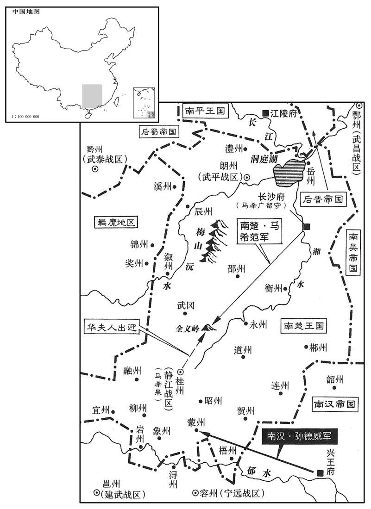
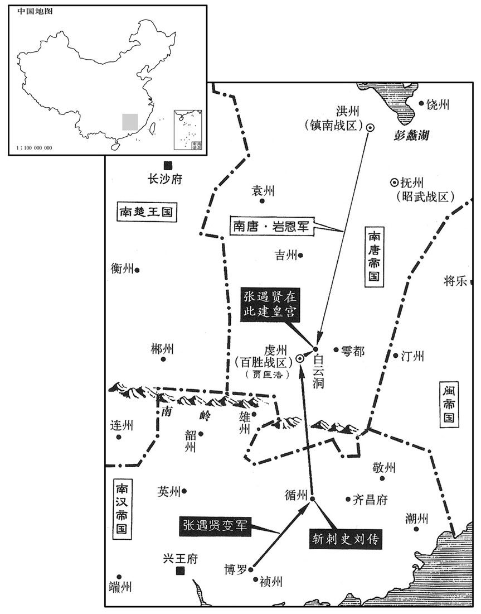

公元942年资治通鉴：本年记事、原文与白话对照
按原书编年位置阅读；追叙和史论不等于本年发生的事件。白话采用所据译本，缺译不以生成译文补齐。
卷283 · 本年记事
公元942年 · 后晋高祖圣文章武明德孝皇帝天福七年
天福七年〔（壬寅、九四二）〕
本年事件索引（现代整理）
- 镇州牙将引晋军入城杀死守军二万并擒杀安重荣
- 后晋改镇州为恒州将成德军改名顺国军
- 后晋任赵莹为侍中杜重威兼任顺国节度使
- 杜重威侵吞安重荣财物并纵容严征民财
- 张铎赴朝廷为子张式诉冤后晋调离张彦泽
- 闽王王曦立李真之女为皇后
- 贺行政联合胡人攻打延州后晋派兵救援
- 南唐宋齐丘请求参与政事获准后因属吏贪赃辞职
- 泾州奏报陈延晖持诏前往凉州后将吏留其任节度使
- 闽王王曦立长乐王王亚澄为闽王
- 张彦泽擅自征讨诸胡败退后虐杀败将杨洪
- 郑受益上书弹劾张彦泽滥杀无罪者
- 李涛等大臣力争重惩张彦泽后晋仅降其官爵
- 南汉高祖刘龑病重时考虑改立孝谨的刘弘昌
- 南汉高祖刘龑卒
- 南汉高祖刘龑奢靡酷刑并猜忌臣下
- 南汉秦王刘弘度即位改名刘玢
- 契丹因后晋招纳吐谷浑遣使责问后晋
- 后晋尊刘太妃为皇太后
- 南唐罢免宋齐丘尚书省职务后许其出镇洪州
- 南唐主李昪与宋齐丘酒宴争论旧日君臣关系
- 南唐任宋齐丘为镇南节度使
- 后晋高祖病重托幼子重睿于冯道
- 后晋高祖石敬瑭卒
- 冯道景延广拥立齐王石重贵继位
- 齐王石重贵压下刘知远入朝辅政诏书
- 后晋出帝尊刘太后为太皇太后
- 闽富沙王王延政围攻汀州福州派兵救援并谋袭建州
- 后晋太皇太后刘氏卒
- 王延政攻汀州四十二战未克后撤兵包洪实击败福州援军
- 后晋大赦
- 景延广加同平章事并总领亲军
- 冯道等人反对恢复枢密使职务
- 张遇贤被循州盗贼推为中天八国王起兵改元永乐
- 南汉任刘弘昌为都统刘弘杲为副讨伐张遇贤
- 高行周围攻襄州一年后攻克城池安从进自焚
- 后晋任赵莹为中书令
- 闽王曦派使携财物向王延政求和王延政拒绝
- 闽王曦宴饮强迫从子王继柔饮酒并将其杀害
- 闽国铸造永隆通宝大铁钱一枚抵铅钱百枚
- 南汉为刘龑安葬于康陵庙号高祖
- 南唐制定并颁行升元条三十卷
- 闽主任余廷英为泉州刺史后因受贿仍复任宰相
- 张遇贤攻取循州杀刺史刘传
- 楚王马希范营建奢华天策府
- 后晋葬高祖石敬瑭于显陵
- 后晋将官营海盐改为向民征收食盐钱
- 后晋三司使董遇加重盐商税负官府复卖海盐
- 闽王曦提拔外甥李仁遇与李光准同为宰相
- 闽主曦嗜酒宴饮常任意拘杀近臣
- 后晋出帝拒绝向契丹称臣只以孙辈自居
- 契丹赵延寿谋求取代后晋君主统治中原
春，正月，丁巳，镇州牙将自西郭水碾门导官军入城，〔碾，鱼蹇翻。水碾，水硙也。〕杀守陴民二万人，〔陴，频弥翻。〕执安重荣，斩之。杜重威杀导者，自以为功。庚申，重荣首至邺都，帝命漆之，函送契丹。〔重，直龙翻。〕
春季，正月，丁巳（初二），镇州牙将从西廓水碾门引导官军入城，杀了守城民众两万人，抓住了安重荣，杀了他。杜重威杀了引导入城的人，把入城据为自己的功绩。庚申（初五），安重荣的首级送到邺都，后晋高祖命令涂了漆防腐，装入匣中送往契丹。
癸亥，改镇州为恒州，成德军为顺国军。〔镇州本恒州，唐避穆宗名改焉。今以安重荣反，改州名从旧，又改军号。恒，胡登翻。〕
癸亥（初八），后晋朝廷更改镇州为恒州，改成德军为顺国军。
丙寅，以门下侍郎、同平章事赵莹为侍中，以杜重威为顺国节度使兼侍中。
丙寅（十一日），任用门下侍郎、同平章事赵莹为侍中，任用杜重威为顺国节度使兼侍中。
安重荣私财及恒州府库，重威尽有之，帝知而不问。又表卫尉少卿范阳王瑜为副使，瑜为之重敛于民，恒人不胜其苦。〔少，诗照翻。为之，于伪翻。敛，力赡翻。胜，音升。〕
安重荣的私财及恒州府库的资财，杜重威全部占有了，后晋高祖知道而不过问。又上表举荐卫尉少卿范阳人王瑜为节度副使，王瑜替杜重威沉重地搜刮百姓，恒州人不堪其苦。
张式父铎诣阙讼冤。〔张彦泽杀张式事见上卷上年。〕壬午，以河阳节度使王周为彰义节度使，代张彦泽。
张式的父亲张铎到朝廷诉冤，告发张彦泽杀害张式的惨状。壬午（二十七日），任用河阳节度使王周为彰义节度使，替代了张彦泽。
闽主曦立皇后李氏，同平章事真之女也；嗜酒刚愎，〔愎，蒲逼翻。〕曦宠而惮之。
闽主王曦立李氏为皇后，李后是同平章事李真的女儿；她嗜好喝酒，刚愎自用，王曦既宠爱她，又惧怕她。
彰武节度使丁审琪，养部曲千人，纵之为暴于境内；军校贺行政与诸胡相结为乱，攻延州，帝遣曹州防御使何重建将兵救之，同、鄜援兵继至，乃得免。〔校，户教翻。鄜，方无翻。〕二月，癸巳，以重建为彰武留后，召审琪归朝。重建，云、朔间胡人也。
本段缺少可靠对应白话，原文完整保留；未使用生成译文。
唐左丞相宋齐丘固求豫政事，唐主听入中书；又求领尚书省，乃罢侍中寿王景遂判尚书省，更领中书、门下省，〔更，工衡翻。〕以齐丘知尚书省事；其三省事并取齐王璟参决。〔所以制宋齐丘。〕齐丘视事数月，亲吏夏昌图盗官钱三千缗，齐丘判贷其死；唐主大怒，斩昌图。〔夏，户雅翻。〕齐丘称疾，请罢省事，从之。
南唐左丞相宋齐丘坚决要求参预政事的署理，南唐主李听任他进入中书省；宋齐丘又要求领管尚书省，南唐主便罢免了侍中寿王李景遂的判理尚书省，改为领管中书、门下省，任用宋齐丘主持尚书省事务；这三个省的事务都要取得齐王李的参与决策。宋齐丘视事几个月后，自己的亲信官吏夏昌图盗取官钱三千缗，宋齐丘判处他可以免死；南唐主李大怒，斩了夏昌图。宋齐丘便称说自己有病，请求罢免尚书省的事务，南唐主答应了他的请求。
泾州奏遣押牙陈延晖持敕书诣凉州，州中将吏请延晖为节度使。
泾州奏报：朝廷遣派押牙陈延晖带着后晋高祖敕书到凉州去，州中将吏请求任用陈延晖为凉州节度使。
三月，闽主曦立长乐王亚澄为闽王。〔乐，音洛。〕
三月，闽主王曦立长乐王王亚澄为闽王。
张彦泽在泾州，擅发兵击诸胡，兵皆败没，调民马千余匹以补之。〔调，徒钓翻。〕还至陕，〔自泾州代还至陕。还，从宣翻。陕，失冉翻。〕获亡将杨洪，乘醉断其手足而斩之。〔断，音短。〕王周奏彦泽在镇贪残不法二十六条，民散亡者五千余户。〔王周代彦泽，故得奏其在镇事。〕彦泽既至，帝以其有军功，又与杨光远连姻，释不问。〔欧史，张彦泽与帝连姻，又讨范延光有功。〕
张彦泽在泾州镇所时，擅自发兵袭击西北诸胡，兵众都打败失散了，又调集民间马千余匹来补充。回军到陕州后，抓获了逃走的将领杨洪，在酒醉中令人砍断他的手足，进而杀了。王周代任彰义节度使以后，奏陈张彦泽在镇时贪暴残忍不法之事二十六条，民众失散逃亡的五千余户。张彦泽还朝，后晋高祖因为他有军功，又同杨光远连了姻亲，便没有究问。
夏，四月，己未，右谏议大夫郑受益上言：「杨洪所以被屠，由陛下去岁送张式与彦泽，使之逞志，致彦泽敢肆凶残，无所忌惮。见闻之人无不切齿，而陛下曾不动心，一无诘让；淑慝莫辨，〔诘，去吉翻，问也。让，责也。慝，吐得翻。〕赏罚无章。中外皆言陛下受彦泽所献马百匹，听其如是，臣窃为陛下惜此恶名，〔为，于伪翻。受献而释有罪，是恶名也。〕乞正彦泽罪法以湔洗圣德。」〔湔，则前翻。〕疏奏，留中。受益，从谠之兄子也。〔郑从谠见唐僖宗纪。谠，音党。〕
夏季，四月，己未（初六），右谏议大夫郑受益上书奏言：“杨洪之所以被屠戮，是由于陛下去年送交张式给张彦泽，使他得志逞凶，以致张彦泽敢于任意施行凶虐残暴，没有任何忌惮。看见或者听说他的暴行之人，没有不切齿愤慨的，而陛下却一点也不动心，不做任何查究和责备；端正与阴邪不能分辩，奖励与惩罚没有章法。内外之人都说陛下接受张彦泽所献的马一百匹，才听任他这样做，我很替陛下惋惜承受这种恶劣的名声，请求陛下明正张彦泽的罪名依法惩办，用以洗刷天子的圣德。”奏书上报以后，被扣押在朝廷之内。郑受益是郑从谠哥哥的儿子。
庚申，刑部郎中李涛等伏合极论彦泽之罪，语甚切至。〔伏合者，伏合门下奏事，合门使以闻。〕辛酉，敕：「张彦泽削一阶，降爵一级。〔阶，武散阶。爵级，封爵之级。〕张式父及子弟皆拜官。泾州民复业者，减其傜赋。」癸亥，李涛复与两省及御史台官伏合〔复，扶又翻。两省官，中书、门下省官也。〕奏彦泽罚太轻，请论如法。帝召涛面谕之。涛端笏前迫殿陛，声〔【章：十二行本「声」上有「论辨」二字；乙十一行本同；孔本同；张校同；退斋校同。】〕色俱厉。帝怒，连叱之，涛不退。帝曰：「朕已许彦泽不死。」涛曰：「陛下许彦泽不死，不可负；不知范延光铁券安在！」〔谓许范延光以不死，而杨光远杀之也，事见上卷五年。〕帝拂衣起，入禁中。丙寅，以彦泽为左龙武大将军。〔为张彦泽为契丹用以残灭晋国、李涛诣彦泽而不惧张本。〕
庚申（初七），刑部郎中李涛等匍匐在阁门之下极力论说张彦泽的罪行，语言十分恳切透彻。辛酉（初八），后晋高祖敕令：“削去张彦泽官秩一阶，降低封爵一级。张式的父亲和他的子弟都拜受官职。泾州民众复营旧业的，减少他们的徭役、税赋。”癸亥（初十），李涛又与中书、门下两省及御史台的官员伏阁上言，奏称对张彦泽的罪过惩罚太轻，请求依法论处。后晋高祖召唤李涛入殿当面向他谕释。李涛双手捧着朝笏迫近殿阶，声色俱厉。后晋帝发怒，连声喝叱他，李涛也不退让。后晋高祖说：“朕已经答应过张彦泽有罪可以免死。”李涛说：“陛下答应过张彦泽可以不死，固然不能不算数，不知当年赐给范延光的铁券现在哪里！”后晋高祖不高兴地拂衣而起，回到宫内，没有理他。丙寅（十三日），任命张彦泽为左龙武大将军。
汉高祖寝疾，以其子秦王弘度、晋王弘熙皆骄恣，少子越王弘昌孝谨有智识，〔少，诗照翻。〕与右仆射兼西御院使王翷谋出弘度镇邕州，弘熙镇容州，而立弘昌。〔为弘熙杀弘昌及翷张本。翷，求仁翻。〕制命将行，会崇文使萧益入问疾，以其事访之。益曰：「立嫡以长，违之必乱。」乃止。〔萧益引经义以沮立弘昌之义。长，知两翻。〕
南汉高祖刘患病不起，因为他的儿子秦王刘弘度、晋王刘弘熙都骄横任性，少子越王刘弘昌孝顺谨慎，有智慧见识，与右仆射兼西御院使王谋划派出刘弘度镇戍邕州，刘弘熙镇戍容州，而立刘弘昌为太子。制命将要下达施行，正好遇上崇文使萧益进宫问候疾病，便向他咨询这件事。萧益说：“立太子应该是长子，违背了这一条必然要导致混乱。”于是便停止下来。
丁丑，高祖殂。〔年五十四。〕
丁丑（二十四日），南汉高祖刘去世。
高祖为人辩察，多权数，好自矜大，常谓中国天子为「洛州刺史」。〔好，呼到翻。以中国天子都洛阳，洛阳之地，盖本洛州刺史所治也。言其政令不能及远，特昔时洛州刺史之任耳。〕岭南珍异所聚，每穷奢极丽，宫殿悉以金玉珠翠为饰。用刑惨酷，有灌鼻、割舌、支解、刳剔、炮炙、烹蒸之法；或聚毒蛇水中，以罪人投之，谓之水狱。同平章事杨洞潜谏，不听。末年尤猜忌。以士人多为子孙计，故专任宦官，由是其国中宦者大盛。〔自刘龑之后，专任宦者，谓百官为门外人，传至于银而国亡矣。〕
南汉高祖为人能分辨观察是非，有心计多权术，喜欢自己夸大，曾经讥讽中原朝廷的天子是“洛州刺史”。岭南地区是珍宝异物所聚集之处，他往往极尽奢侈华丽的追求，宫殿全部用黄金、美玉、珍珠、翠作装饰。使用的刑罚惨烈严酷，有灌鼻、割舌、肢解、刳剔、炮炙、烹蒸等办法；或者把毒蛇聚养在水中，把犯了罪的人投进去，称为“水狱”。同平章事杨洞潜劝阻他，高祖不听。到了末年他更加猜忌；以为士人往往替子孙着想，所以专任宦官，因此南汉国中宦官大为兴盛。
秦王弘度即皇帝位，更名玢；〔更，工衡翻。玢，府巾翻。〕以弘熙辅政，改元光天；尊母赵昭仪曰皇太妃。
秦王刘弘度即南汉皇帝位，改名刘玢；任用刘弘熙辅政，改年号为光天；尊奉其母赵昭仪为皇太妃。
契丹以晋招纳吐谷浑，遣使来让。帝忧悒不知为计；五月，己亥，始有疾。〔悒，乙及翻。〕
契丹因为晋朝招纳吐谷浑，遣派使者来责问。后晋高祖忧郁不知怎么办为好；五月，己亥（十六日），开始生病。
乙巳，尊太妃刘氏为皇太后。太后，帝之庶母也。〔徐无党曰：帝所生母也。〕
乙巳（二十二日），后晋高祖专奉太妃刘氏为皇太后。太后是后晋帝父亲的妾，也就是后晋帝的生母。
唐丞相、太保宋齐丘既罢尚书省，不复朝谒。〔复，扶又翻。朝，直遥翻；下同。〕唐主遣寿王景遂劳问，〔劳，力到翻。〕许镇洪州，始入朝。
南唐丞相、太保宋齐丘被罢免尚书省的官职以后，就不再上朝谒见。南唐主李派寿王李景遂去慰劳问候他，答应他去镇戍洪州，这才开始入朝。
唐主与之宴，酒酣，齐丘曰：「陛下中兴，臣之力也，柰何忘之！」唐主怒曰：「公以游客干朕，〔事见二百六十六卷梁太祖干化二年。〕今为三公，亦足矣。乃与人言朕乌喙如句践，难与共安乐，有之乎﹖」〔越范蠡遗文种书，言越王为人，长颈乌喙，可与同患难，不可与同安乐。句，读如钩。乐，读如洛。〕齐丘曰：「臣实有此言。臣为游客时，陛下乃偏裨耳。今日杀臣可矣。」明日，唐主手诏谢之曰：「朕之褊性，〔褊，补典翻。〕子嵩平昔所知。少相亲，老相怨，可乎！」〔少，诗照翻。自古君臣之间，岂无亲故，未有如宋齐丘之挟旧矜功，唐主之启宠纳侮者也。〕
南唐主李与宋齐丘宴会，酒喝的正痛快时，宋齐丘说：“陛下完成中兴大业，是我的力量啊，为什么把我忘了！”南唐主发怒说：“阁下以游说谋士的身份作朕的客人，现在位至三公，也可以满足了。可是你却跟人家说朕长的是鸟嘴像战国时的越王勾践一样，难于同朕共享安乐，有这样的话吗？”宋齐丘说：“臣确实说过这个话。臣当游说之客时，陛下不过是个偏将副官而已。今天陛下可以把臣杀了哇！”第二天，南唐主下手诏向他谢过说：“朕的性情褊颇，子嵩你素来是知道的。我们从小相亲相爱，老来却相怨，这样好吗？”
丙午，以齐丘为镇南节度使。〔践洪州之约。宋齐丘本洪州进士，宠之以衣锦也。〕
丙午（二十三日），南唐任命宋齐丘为镇南节度使。
帝寝疾，一旦，冯道独对。帝命幼子重睿出拜之，又令宦者抱重睿置道怀中，其意盖欲道辅立之。〔重，直龙翻。考异曰：汉高祖实录：「晋高祖大渐，召近臣属之曰：『此天下，明宗之天下，寡人窃而处之久矣。寡人既谢，当归许王，寡人之愿也。』此说难信。今从薛史。〕
后晋高祖患病不起，一天早上，召来冯道独自对话。后晋高祖叫幼子石重睿出来拜见冯道，又命令宦官抱着石重睿放到冯道怀中，意思是要冯道辅立他为幼主。
六月，乙丑，帝殂。〔年五十一。五代会要，殂于邺都大内之保昌殿。〕
六月，乙丑（十三日），后晋高祖石敬瑭去世。
道与天平节度使、侍卫马步都虞候景延广议，以国家多难，宜立长君，乃奉广晋尹齐王重贵为嗣。〔晋高祖托孤于冯道，与吴主孙休托孤于濮阳兴、张布之事略同。难，乃旦翻。〕是日，齐王即皇帝位。延广以为己功，始用事，禁都下人无得偶语。〔以防奸人谋为变。〕
冯道与天平节度使、侍卫马步都虞候景延广谋议，认为国家正处在困难多的时刻，应该立长子为嗣君，便拥立广晋尹齐王石重贵为继承人。这一天，齐王即皇帝位。景延广以为这是自己的功劳，开始弄权用事，禁止国都中的人相
聚议论是非。
初，高祖疾亟，有旨召河东节度使刘知远入辅政，齐王寝之；知远由是怨齐王。〔为刘知远不入援张本。〕
起初，后晋高祖石敬瑭病重时，有旨召唤河东节度使刘知远入朝辅政，齐王石重贵把旨压下不发，刘知远从此与齐王结下怨恨。
丁卯，尊皇太后曰太皇太后，〔高祖之庶母刘氏也。〕皇后曰皇太后。〔高祖之后李氏也。〕
丁卯（十五日），后晋出帝石重贵尊皇太后刘氏为太皇太后，皇后李氏为皇太后。
闽富沙王延政围汀州，闽主曦发漳、泉兵五千救之。〔九域志：泉州西至漳州二百九十五里，漳州酉至汀州五百四十里。宋白曰：梁山有漳浦水，一名漳溪水，唐垂拱二年，析泉州之西南置漳州。垂拱之泉州，今之福州也。〕又遣其将林守亮入尤溪，大明宫使黄敬忠屯尤口，〔九域志：尤溪县在南剑州南一百五十五里，盖王氏初置县也。尤口，尤溪口也。〕欲乘虚袭建州；国计使黄绍颇将步卒八千为二军声援。
闽国富沙王王延政围攻汀州，闽主王曦调发漳州、泉州兵五千人去救援。又遣派他的将领林守亮进入尤溪，派大明宫使黄敬忠屯驻尤口，准备乘着对方空虚时袭击建州；国计使黄绍颇领步兵八千人做林、黄二军的声援。
秋，七月，壬辰，太皇太后刘氏殂。
秋季，七月，壬辰（初十），后晋太皇太后刘氏去世。
闽富沙王延政攻汀州，四十二战，不克而归。其将包洪实、陈望，将水军以御福州之师；丁酉，遇于尤口。〔尤溪口。〕黄敬忠将战，占者言时刻未利，按兵不动；洪实等引兵登岸，水陆夹攻之，杀敬忠，俘斩二千级，林守亮、黄绍颇皆遁归。
闽国富沙王王延政攻打汀州，经过四十二次战斗，攻不下来就回去了。他的属将包洪实、陈望带领水军抵御福州的军队；丁酉（十五日），双方军队在尤口相遇。尤口守将黄敬忠将要出城，占卜的人说时刻未到出战不利，便按兵不动；包洪实等引兵登岸，水陆两军夹攻他，杀了黄敬忠，俘虏和斩杀了二千人，林守亮和黄绍颇都逃回去。

庚子，大赦。
庚子（十八日），后晋朝廷实行大赦。
癸卯，加景延广同平章事，兼侍卫马步都指挥使。〔赏其定策之功也。为景延广挟权制上、构契丹之隙张本。〕
癸卯（二十一日），加封景延广为同平章事，兼侍卫马步都指挥使。
勋旧皆欲复置枢密使，〔罢枢密使见上卷上年。〕冯道等三奏，请以枢密旧职让之；〔并枢密于中书，故谓枢密院旧所典之职为旧职。〕帝不许。
后晋朝廷的功勋旧臣都要求恢复设置枢密使，冯道等人三次上奏，请求把已经并归中书省的枢密旧职让还回去，出帝石重贵没有答应他们的请求。
有神降于博罗县民家，〔博罗，汉古县，唐属循州，时为汉土。郡国志：循州有博罗山，浮海而来，傅着罗山，故名博罗。宋朝博罗县属惠州。九域志：在州北四十五里。宋白曰：博罗县接境于罗山，故曰博罗；东接龙州，南接西平，西接增城界。〕与人言而不见其形，闾阎人往占吉凶，多验，县吏张遇贤事之甚谨。时循州盗贼群起，莫相统一，贼帅共祷于神，神大言曰：「张遇贤当为汝主。」于是〔【章：十二行本「是」下有「群帅」二字；乙十一行本同；孔本同。】〕共奉遇贤，称中天八国王，改元永乐，〔乐，音洛。〕置百官，攻掠海隅。〔循州东南距潮、惠二州，皆海隅之地。〕遇贤年少，〔少，诗照翻。〕无他方略，诸将但告进退而已。
有个神降临在博罗县民家中，和人说话而看不见他的形貌，邻里间的人去找他占卜吉凶事情，往往应验，县吏张遇贤事奉他极为恭谨。当时，岭南循州一带盗贼群起，相互间不能统一，乱贼的首领共同向神祷告，那个神大声说：“张遇贤应当做你们的君主。”于是，众贼共同拥戴张遇贤，称为中天八国王，改年号为永乐，设置百官，攻取掠抢海边沿岸一带。张遇贤年纪尚轻，没有什么方略，所属诸将只是向他报告出去、回来罢了。

汉主以越王弘昌为都统，循王弘杲为副以讨之，战于钱帛馆。汉兵不利，二王皆为贼所围；指挥使陈道庠等力战救之，得免。东方州县多为遇贤所陷。〔东方州县，谓番禺以东州县也，即惠、潮之地。九域志：广州东至惠州三百一十五里，又自惠州东至潮州八百一十里。〕道庠，端州人也。
南汉国主刘玢任命越王刘弘昌为都统，循王刘弘杲为副都统去讨伐张遇贤，在钱帛馆交战。南汉兵作战失利，二王都被贼兵所围困；指挥使陈道庠等力战去解救他们，才得免死。南汉境内靠东边的州县多被张遇贤所攻陷。陈道庠是端州人。
高行周围襄州踰年，下不。〔去年十一月，高行周围襄州，事始见上卷。〕城中食尽。奉国军都虞候曲周王清言于行周曰：〔曲周县，属洺州。宋熙宁三年，省曲周县为镇，入鸡泽县。〕「贼城已危，我师已老，民力已困，不早迫之，尚何俟乎！」与奉国都指挥使元城刘词帅众先登。〔元城县带魏州。帅，读曰率。〕八月，拔之。安从进举族自焚。
高行周围攻襄州一年多，没能攻下。城中的粮食都吃用完了。奉国军都虞候曲周人王清向高行周进言说：“贼城已经危窘，我们的兵众已经疲惫，民力已经困乏，不早点逼迫他，还等待什么呢！”便与奉国都指挥使元城人刘词率领兵众带头登城。八月，攻破城池。安从进全族自焚。
甲子，以赵莹为中书令。
甲子（十三日），后晋朝廷任用赵莹为中书令。
闽主曦遣使以手诏及金器九百、钱万缗、将吏敕告六百四十通，求和于富沙王延政，延政不受。
闽主王曦派使者用手诏及金器九百、钱万缗、将吏敕告六百四十通，向富沙王王延政求和，王延政不接受。
丙寅，闽主曦宴群臣于九龙殿。从子继柔不能饮，强之。〔从，才用翻。强，其两翻。〕继柔私减其酒，曦怒，并客将斩之。〔王曦之酗虐，孙皓之流也。将，即亮翻。〕
丙寅（十五日），闽主王曦在九龙殿大宴群臣。他的侄子王继柔不能饮酒，强迫他喝。王继柔暗中把酒减少，王曦发怒，连同客将一起杀了。
闽人铸永隆通宝大铁钱，一当铅钱百。
闽国铸“永隆通宝”大铁钱，一枚当铅钱百枚。
汉葬天皇大帝于康陵，庙号高祖。
南汉在康陵安葬天皇大帝刘，庙号高祖。
唐主自为吴相，兴利除害，变更旧法甚多。〔梁均王之贞明四年，唐主始得吴政，吴王隆演之十五年也。〕及即位，命法官及尚书删定为升元条三十卷；〔时唐以升元纪元。〕庚寅，行之。
南唐主李自从当吴国宰相以来，兴利除害，把旧的法规变更了很多。及至他自己即位当皇帝，命令执法官及尚书省删定为《升元条》三十卷；庚寅（疑误），颁布施行。
闽主曦以同平章事候官余廷英为泉州刺史。廷英贪秽，掠人女子，诈称受诏采择以备后宫。事觉，曦遣御史按之。廷英惧，诣福州自归，曦诘责，将以属吏；〔诘，去吉翻。属，之欲翻。〕廷英退，献买宴钱万缗。曦悦，明日召见，谓曰：「宴已买矣，皇后贡物安在﹖」廷英复献钱于李后，乃遣归泉州；自是诸州皆别贡皇后物。未几，复召廷英为相。〔见，贤遍翻。复，扶又翻。几，居岂翻。史言闽主曦之好货甚于昶。〕
闽主王曦任用同平章事侯官人余廷英为泉州刺史。余廷英贪脏污浊，掠夺别人家的妇女，欺骗说是受了朝廷的诏命选取来供给皇家后宫使用的。事情被察觉后，王曦派遣御史去查究。余廷英害怕，到福州来自首，王曦责问他，将要交有关部门惩办；余廷英退出来后，贡献买宴钱万缗。王曦高兴，第二天就召见他，对他说：“宴已经买了，献给皇后的贡物在哪里啊？”余廷英又献钱给李皇后，便仍把他派回泉州了；从此各州都另备贡礼送给皇后。没过多久，又召命余廷英任为宰相。
冬，十月，丙子，张遇贤陷循州，杀汉刺史刘传。
冬季，十月，丙子（二十六日），张遇贤攻陷循州，杀南汉刺史刘传。
楚王希范作天策府，〔王举天下大定录曰：希范建天策府于州城西北，造天策、光政等一十六楼，又造天策、勤政等五堂。〕极栋宇之盛；户牖栏槛皆饰以金玉，涂壁用丹砂数十万斤；〔丹砂出辰、溪、溆、锦等州及诸溪峒，皆楚之境内也。本草图经曰：丹砂生深山石崖间，土人穴地数十尺，始见其苗，乃白石也，谓之丹砂床。砂生石上，其块大者如鸡子，小者如石榴颗，状若芙蓉头、箭镞连床者；紫黯若铁色，而光明莹澈，碎之，崭岩作墙壁，又似云母片可析者，无石弥佳。过此则淘土石中得之。〕地衣，春夏用角蕈，〔角簟，剖竹为细篾，织之，藏节去筠，莹滑可爱；南蛮或以白藤为之。〕秋冬用木绵。〔木绵，今南方多有焉。于春�之@畦种之，至夏秋之交结实，至秋半，其实之外皮四裂，中踊出，白如绵。土人取而纺之，织以为布，细密厚暖，宜以御冬。〕与子弟僚属游宴其间。
楚王马希范建造天策府，楼宇的宏伟盛大达于极点，门窗栏槛都用金玉作装饰，涂刷墙壁用的朱红色的砂粉就用了几十万斤；铺盖地面用的地衣，春天和夏天用竹篾编织的席子，秋天和冬天用木棉纺织的布匹。与他的子弟及僚属游乐饮宴在其间。
十一月，庚寅，葬圣文章武明德孝皇帝于显陵，〔陵在河南府寿安县。〕庙号高祖。
十一月，庚寅（初十），后晋朝廷在显陵安葬圣文章武明德孝皇帝石敬瑭，庙号为高祖。
先是河南、北诸州官自卖海盐，岁收缗钱十七万；又散蚕盐敛民钱。〔蚕盐所以裛茧。唐天成二年，敕：每年二月内一度俵散蚕盐，依夏税限纳钱。宋白曰：周显德三年，敕齐州蚕盐于秋苗上俵配，谓之查头，每一石征钱三千文；沧、棣、滨、淄、青，每石征绢一匹。后齐州减征一半，五州所征绢加倍。先，悉荐翻。〕言事者称民坐私贩盐抵罪者众，不若听自贩，而岁以官所卖钱直敛于民，谓之食盐钱；高祖从之。俄而盐价顿贱，每斤至十钱。
过去，黄河南、北诸州官府私自贩卖海盐，每年可以收入钱十七万缗；又散派养蚕抱茧用的盐来搜刮民众的钱财。奏事的人上言说民众因卖私盐而犯法抵罪的人很多，不如听任他们自行贩卖，而把每年官府所卖的钱数直接用赋税形式向民间征收，叫做“食盐钱”；晋高祖听从了这个意见。转眼之间盐价立即下降，每斤只卖十个钱。
至是，三司使董遇欲增求羡利，〔羡，延面翻。〕而难于骤变前法，乃重征盐商，过者七钱，留卖者十钱。由是盐商殆绝，而官复自卖。〔复，扶又翻。〕其食盐钱，至今敛之如故。〔五代会要：时言事者请将食盐钱于诸道州府，计户每户一贯至二百为五等配之，然后任人逐便兴贩，既不亏官，又益百姓。朝廷行之，诸处场务且仍旧。俄而盐货顿贱，去出盐远处州县，每斤不过二十。掌事者又难骤改其法，奏请重置税焉。盖欲绝兴贩，归利于官。场院粜盐虽多，人户盐钱又不放免，民甚苦之。〕
到这时，三司使董遇想要增加超额的税赋，又难于突然改变以前的法度，便加重向盐商征税，经过这里的每斤收七钱，留在这里售卖的每斤收十钱。因此盐商私贩的便几乎没有了，而官府又恢复了自己的贩卖。但是敛收“食盐钱”，却至今照征如故。
闽盐铁使、右仆射李仁遇，敏之子，〔李敏，闽主昶元妃梁国夫人之父。〕闽主曦之甥也；年少，美姿容，得幸于曦。〔有龙阳之宠也。〕十二月，以仁遇为左仆射兼中书侍郎，翰林学士、吏部侍郎李光准为中书侍郎兼户部尚书，并同平章事。
闽国盐铁使、右仆射李仁遇是李敏的儿子，也是闽主王曦的外甥；年纪轻，容貌长得美好，受到王曦的宠幸。十二月，任用李仁遇为左仆射兼中书侍郎，另任用翰林学士、吏部侍郎李光准为中书侍郎兼户部尚书，二人都委授同平章事。
曦荒淫无度，尝夜宴，光准醉忤旨，〔忤，五故翻。〕命执送都市斩之；吏不敢杀，系狱中。明日，视朝，〔朝，直遥翻。〕召复其位。是夕，又宴，收翰林学士周维岳下狱。〔下，户嫁翻。〕吏拂榻待之，曰：「相公昨夜宿此，尚书勿忧。」醒而释之。他日，又宴，侍臣皆以醉去，独维岳在。曦曰：「维岳身甚小，何饮酒之多﹖」左右或曰：「酒有别肠，〔此俚俗之常语。〕不必长大。」曦欣然，命捽维岳下殿，〔捽，昨没翻。〕欲剖视其酒肠。或曰：「杀维岳，无人〔【章：十二行本「人」下有「复能」二字；乙十一行本同；孔本同；张校同。】〕侍陛下刻饮者。」乃舍之。
闽主王曦荒淫无度，曾在举行夜宴时，因为李光准醉酒违背了闽主意旨，便命人把他绑起来送到市街上问斩；下边的官吏不敢杀他，拘留在牢狱里。第二天，闽主上朝视事，又召来恢复他的职位。这天晚间，又举行宴会，把翰林学士周维岳又拘系下狱。下边的属吏扫干净了床接待他，并说：“昨天宰相爷也住在这里，尚书大人您不必忧虑。”闽主酒醒以后，果然也把他释放了。过了些日子，又举行宴会，陪侍的大臣都因醉酒散去，只有周维岳还在。闽主王曦说：“周维岳身材矮小，为什么他能喝那么多的酒？”左右的人有的说：“能喝酒的人，另有盛酒的肠子，不必非长得高大不可。”王曦听了很高兴，便命人把他揪拿下殿，想要把他割腹看他的酒肠。有人又说：“杀了周维岳，可就没有人能陪伴陛下放开量痛快饮酒了。”便又释放了他。
帝之初即位也，大臣议奉表称臣告哀于契丹，景延广请致书称孙而不称臣。〔景延广之议，因三年契丹主令高祖称儿皇帝，用家人之礼致书也。〕李崧曰：「屈身以为社稷，何耻之有！〔为，于伪翻。〕陛下如此，他日必躬擐甲胄，〔擐，音宦。〕与契丹战，于时悔无益矣。」〔于时者，于其时也。〕延广固争，冯道依违其间。帝卒从延广议。〔卒，子恤翻。〕契丹大怒，遣使来责让，且言：「何得不先承禀，遽即帝位﹖」延广复以不逊语答之。
后晋出帝石重贵初即位时，朝中大臣商讨要向契丹奉表称臣报告先帝死亡之哀，景延广主张写个信不上表，并且称孙不称臣。李崧奏道：“屈身事胡是为了江山社稷，有什么可耻的！陛下这样做，他日必然落个亲身披甲带胄去同契丹打仗，那时再后悔可就没有用处了。”景延广坚持自己的意见力争，冯道在其间含含糊糊不明确表态，出帝终于听从了景延广的意见。契丹接信后大怒，派使者来质问责备，并且说：“为什么不先来禀告，自己便骤然即位称帝？”景延广又用不尊敬的话语回答他。
契丹卢龙节度使赵延寿欲代晋帝中国，〔赵延寿父子欲帝中国之心，已见于屯团柏之时。〕屡说契丹击晋，契丹主颇然之。〔说，式芮翻。为契丹入寇张本。〕
契丹委任的卢龙节度使赵延寿想要代替晋主做中原的皇帝，多次劝说契丹进攻晋国，契丹主耶律德光认为他讲得很对。
译本所载内容待核对（不作白话）
[6]彰武节度使丁审琪，养部曲千人，纵之为暴于境内；军校贺行政与诸胡相结为乱，攻延州，帝遣曹州防御使何重建将兵救之，同、援兵继至，及得免。二月，癸巳，以重建为彰武留后，召审琪归朝。重建，云、朔间胡人也。[6]彰武节度使丁审琪，豢养私属部曲千人，放纵他们在辖境内滥施暴行；军中小校贺行政与众胡人相勾结作乱，攻打延州，后晋高祖遣派曹州防御使何重建领兵去救援延州，同州、州的援兵也相继来到，延州才免除了厄难。二月，癸巳（初九），朝廷任命何重建为彰武留后，召唤丁审琪还朝。何重建是云州和朔州之间的胡人。
原书衔接
齐王上〔讳重贵，高祖兄敬儒之子。〕